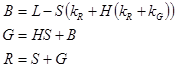

title: Blend effect description: Use the blend effect to combine 2 images. This effect has 26 blend modes. ms.assetid: 39D8BAA3-8FF3-4F10-99A0-B26FCA3018AE keywords:
Use the blend effect to combine 2 images. This effect has 26 blend modes.
The CLSID for this effect is CLSID_D2D1Blend.
Here is an example image of every blend mode of the blend effect. A full list of the blend modes and the corresponding mode properties are in the next section
Here is another example using the exclusion mode.
| Before image 1 |
|---|
|
| Before image 2 |
| After |
ComPtr<ID2D1Effect> blendEffect;
m_d2dContext->CreateEffect(CLSID_D2D1Blend, &blendEffect);
blendEffect->SetInput(0, bitmap);
blendEffect->SetInput(1, bitmapTwo);
blendEffect->SetValue(D2D1_BLEND_PROP_MODE, D2D1_BLEND_MODE_EXCLUSION);
m_d2dContext->BeginDraw();
m_d2dContext->DrawImage(blendEffect.Get());
m_d2dContext->EndDraw();
| Display name and index enumeration | Description |
|---|---|
| Mode D2D1_BLEND_PROP_MODE | The blend mode used for the effect. See Blend modes for more info. The type is D2D1_BLEND_MODE. The default value is D2D1_BLEND_MODE_MULTIPLY. |
The table here shows all the blend modes of this effect. The helper functions necessary to compute the output of the effect are in the next section.
Color: OPRGB = f(FRGB, BRGB) * FA * BA + FRGB * FA * (1 - BA) + BRGB * BA * (1 - FA)
Alpha: OA = FA * (1 - BA) + BA
Where:
Some of the blend modes require conversion to and from the hue, saturation, luminosity (HSL) color space to RGB.
| Enumeration | Equation |
|---|---|
| D2D1_BLEND_MODE_DARKEN | Basic blend formula for alpha only. |
| D2D1_BLEND_MODE_MULTIPLY | Basic blend formula for alpha only. |
| D2D1_BLEND_MODE_COLOR_BURN | Basic blend formulas with f(FRGB, BRGB) = |
| D2D1_BLEND_MODE_LINEAR_BURN | Basic blend formulas with f(FRGB, BRGB) = |
| D2D1_BLEND_MODE_DARKER_COLOR | Basic blend formula for alpha only. |
| D2D1_BLEND_MODE_LIGHTEN | Basic blend formula for alpha only. |
| D2D1_BLEND_MODE_SCREEN | Basic blend formula for alpha only. |
| D2D1_BLEND_MODE_COLOR_DODGE | Basic blend formulas with f(FRGB, BRGB) = |
| D2D1_BLEND_MODE_LINEAR_DODGE | Basic blend formulas with f(FRGB, BRGB) = |
| D2D1_BLEND_MODE_LIGHTER_COLOR | Basic blend formula for alpha only. |
| D2D1_BLEND_MODE_OVERLAY | Basic blend formulas with f(FRGB, BRGB) = |
| D2D1_BLEND_MODE_SOFT_LIGHT | Basic blend formulas with f(FRGB, BRGB) = |
| D2D1_BLEND_MODE_HARD_LIGHT | Basic blend formulas with f(FRGB, BRGB) = |
| D2D1_BLEND_MODE_VIVID_LIGHT | Basic blend formulas with f(FRGB, BRGB) = |
| D2D1_BLEND_MODE_LINEAR_LIGHT | Basic blend formulas with f(FRGB, BRGB) = |
| D2D1_BLEND_MODE_PIN_LIGHT | Basic blend formulas with f(FRGB, BRGB) = |
| D2D1_BLEND_MODE_HARD_MIX | Basic blend formulas with f(FRGB, BRGB) = |
| D2D1_BLEND_MODE_DIFFERENCE | Basic blend formulas with f(FRGB, BRGB) = abs(FRGB - BRGB) |
| D2D1_BLEND_MODE_EXCLUSION | Basic blend formulas with f(FRGB, BRGB) = FRGB + BRGB 2 * FRGB * BRGB |
| D2D1_BLEND_MODE_HUE | Basic blend formula for alpha only. |
| D2D1_BLEND_MODE_SATURATION | Basic blend formula for alpha only. |
| D2D1_BLEND_MODE_COLOR | Basic blend formula for alpha only. |
| D2D1_BLEND_MODE_LUMINOSITY | Basic blend formula for alpha only. |
| D2D1_BLEND_MODE_DISSOLVE | Given:A scene coordinate XY for the current pixelA deterministic pseudo-random number generator rand(XY) based on seed coordinate XY, with unbiased distribution of values from [0, 1] |
| D2D1_BLEND_MODE_SUBTRACT | Basic blend formula for alpha only. |
| D2D1_BLEND_MODE_DIVISION | Basic blend formula for alpha only. |
[!Note]
For all Blend modes, the output value is premultiplied and clamped to the range [0, 1].
The luminosity component is computed using the RGB weights here:

This places S and L in the range [0.0, 1.0] and H in the range [-1.0, 5.0].
To convert the other way we use the inverse of the previous calculations.
If S = 0 then R = G = B = L
Otherwise there are six hue-dependant cases:
If H is greater than 0, the values are in the red/magenta sector where R > B > G.

If H is greater than or equal to 0 and less than 1, the values are in the red/yellow sector where R > G > B.

If H is greater than or equal to 1 and less than 2, the values are in the yellow/green sector where G > R > B.

If H is greater than or equal to 2 and less than 3, the values are in the green/cyan sector where G > B > R.

If H is greater than or equal to 3 and less than 4, the values are in the cyan/blue sector where B > G > R.

If H is greater than or equal to 4, the values are in the blue/magenta sector where B > R > G.

Because the blending modes make arbitrary combinations of HSL components from two different colors, it is common for the converted RGB value to be out-of-gamut, that is, one or more channel components may be outside the legal range of [0.0, 1.0]. These colors are brought back into gamut by minimally reducing the saturation, while preserving both hue and luminosity:
The output bitmap for this effect is always the size of the union of the two input images.
For an example of this effect, download the Direct2D composite effect modes sample.
| Requirement | Value |
|---|---|
| Minimum supported client | Windows 8 and Platform Update for Windows 7 [desktop apps | Windows Store apps] |
| Minimum supported server | Windows 8 and Platform Update for Windows 7 [desktop apps | Windows Store apps] |
| Header | d2d1effects.h |
| Library | d2d1.lib, dxguid.lib |